Dérivation, convexité, continuité
1 Dérivée d’une fonction composée
1.1 Dérivée de x\mapsto \sqrt{u(x)}
Soit u une fonction définie, positive et dérivable sur un intervalle I de \mathbb{R} et f la fonction définie sur I par f(x)=\sqrt{u(x)}.
La fonction f est dérivable en tout réel x \in I tel que u(x) \neq 0 et
f'(x)=\dfrac{u'(x)}{2\sqrt{u(x)}}
Avec les mêmes notations: Soit a \in I tel que u(a)>0. Soit h \in \mathbb{R}^* tel que a+h \in I.
On pose \tau(h)=\dfrac{f(a+h)-f(a)}{h} c’est-à-dire \tau(h)=\dfrac{\sqrt{u(a+h)}-\sqrt{u(a)}}{h}.
Ainsi \tau(h)=\dfrac{ (\sqrt{u(a+h)}-\sqrt{u(a)})(\sqrt{u(a+h)}+\sqrt{u(a)})}{h(\sqrt{u(a+h)}+\sqrt{u(a)})}=\dfrac{u(a+h)-u(a)}{h(\sqrt{u(a+h)}+\sqrt{u(a)})}
Ainsi \tau(h)=\dfrac{u(a+h)-u(a)}{h}\times \dfrac{1}{\sqrt{u(a+h)}+\sqrt{u(a)}}. Examinons la limite de \tau(h) lorsque h tend vers 0:
D’une part \lim\limits_{h \rightarrow 0}\dfrac{u(a+h)-u(a)}{h}=u'(a).
D’autre part \lim\limits_{h \rightarrow 0} \dfrac{1}{\sqrt{u(a+h)}+\sqrt{u(a)}}=\dfrac{1}{2\sqrt{u(a)}}
Ainsi par produit, \lim\limits_{h \rightarrow 0}\dfrac{u(a+h)-u(a)}{h} \times \dfrac{1}{\sqrt{u(a+h)}+\sqrt{u(a)}} = \dfrac{u'(a)}{2\sqrt{u(a)}}. Ceci étant vrai pour tout a\in I tel que u(a)>0, on a \forall x \in I tel que u(x) \neq 0, f'(x)=\dfrac{u'(x)}{2\sqrt{u(x)}}
Soit f la fonction définie sur [1;+\infty[ par f(x)=\sqrt{x^2-1}. Déterminer la fonction dérivée de f.
La fonction f est dérivable sur ]1;+\infty[. En effet, \forall x \in ]1;+\infty[,~x^2-1>0.
Soit x \in ]1;+\infty[. f'(x)=\dfrac{2x}{2\sqrt{x^2-1}}=\dfrac{x}{\sqrt{x^2-1}}
1.2 Dérivée de x \mapsto (u(x))^n
Soit u une fonction définie et dérivable sur un intervalle I de \mathbb{R}. Soit n \in \mathbb{N}^*. Soit f la fonction définie sur I par f(x)=(u(x))^n.
La fonction f est dérivable sur I et pour tout x \in I:
f'(x)=nu'(x)(u(x))^{n-1}
Avec les mêmes notations. La démonstration se fait par récurrence : soit n \in \mathbb{N}^*. On note H_n : « \left( u(x)^{n} \right)'=nu'(x)(u(x))^{n-1} »
Initialisation: Pour n=1: 1\times u'(x)(u(x))^{1-1}=u'(x). Ainsi H_1 est vraie.
Hérédité: Soit k \in \mathbb{N}^* tel que H_k est vraie. Montrons que H_{k+1} est vraie.
(u(x))^{k+1}=u(x) \times u(x)^k. On peut dériver cette expression en tant que produit de deux fonctions:
(u(x)^{k+1})'=u'(x)\times u(x)^k + u(x) \times (u(x)^k)'=u'(x)\times u(x)^k + u(x) \times ku'(x)(u(x))^{k-1}
(u(x)^{k+1})'=u'(x)\times u(x)^k + k \times u'(x)\times u(x)^k=(k+1) \times u'(x)\times (u(x))^k. Ainsi H_{k+1} est vraie.
Conclusion: H_1 est vraie et H_k \Rightarrow H_{k+1} donc par récurrence, \forall n \in \mathbb{N}^*,~H_n est vraie.
Soit f la fonction définie sur \mathbb{R} par f(x)=(4x-3)^5. Déterminer la fonction dérivée de f.
La fonction f est dérivable sur \mathbb{R}. Soit x \in \mathbb{R}, f'(x)=5\times 4 \times (4x-3)^4=20(4x-3)^4.
(admise) Soit u une fonction définie et dérivable sur un intervalle I. Soit n \in \mathbb{Z}^* (si n<0, on suppose que u ne s’annule pas sur I). Soit f la fonction définie sur I par f(x)=(u(x))^n.
La fonction f est dérivable sur I et pour tout x \in I:
f'(x)=nu'(x)(u(x))^{n-1}
1.3 Dérivée de x \mapsto e^{u(x)}
(admise)
Soit u une fonction définie et dérivable sur un intervalle I de \mathbb{R}.
Soit f la fonction définie sur I par f(x)=e^{u(x)}.
La fonction f est dérivable sur I et pour tout réel x de I, f'(x)=u'(x)e^{u(x)}.
Soit f la fonction définie sur \mathbb{R} par f(x)=e^{4x+3}.
Déterminer la fonction dérivée de f.
la fonction x \mapsto 4x+3 est dérivable sur \mathbb{R} (fonction affine)
la fonction x \mapsto e^x est dérivable sur \mathbb{R}
Donc, par composition, f est dérivable sur \mathbb{R} et pour tout x réel, f'(x)=4e^{4x+3}.
1.4 Dérivée de x \mapsto f(mx+p)
Soient m et p deux réels et f une fonction définie et dérivable sur un intervalle I de \mathbb{R}.
La fonction x \mapsto f(mx+p) est dérivable en tout réel x tel que mx+p \in I et on a:
(f(mx+p))'=mf'(mx+p)
Avec les mêmes notations. Si m=0, le résultat est immédiat ; supposons m \neq 0. Soit a un réel tel que ma+p \in I. Soit h \in \mathbb{R}^* tel que m(a+h)+p \in I.
On pose \tau(h)=\dfrac{ f(m(a+h)+p) - f(ma+p) }{h}.
On a donc: \tau(h)=m \times \dfrac{ f(ma+p + mh)-f(ma+p) }{mh}.
Or f est dérivable en ma+p donc \lim\limits_{mh \rightarrow 0} \dfrac{ f(ma+p + mh)-f(ma+p) }{mh}=f'(ma+p)
Ainsi, par produit, \lim\limits_{mh \rightarrow 0}m \dfrac{ f(ma+p + mh)-f(ma+p) }{mh}=mf'(ma+p)
Ceci étant vrai pour tout réel a tel que ma+p\in I, on a, pour tout x tel que mx+p \in I, (f(mx+p))'=mf'(mx+p).
1.5 Généralisation
Des exemples précédents se dessine une formule unifiée de la dérivée de x\mapsto f(u(x)) (fonction composée de u et de f que l’on note f\circ u)
(f\circ u)' : x \mapsto u'(x)\times f'(u(x))
1.6 Dérivées successives
Soit f une fonction dérivable sur un intervalle I. On note f' sa dérivée.
Lorsque f' est dérivable sur I, on note f'' sa dérivée.
f'' est appelée la dérivée seconde de f sur I.
Soit n \in \mathbb{N}, on note f^{(n)} la dérivée n-ième de f, également appelée la dérivée d’ordre n de f.
2 Convexité
2.1 Définition
Soit f une fonction dérivable sur un intervalle I et \mathcal{C}_f sa courbe représentative dans un repère.
On dit que f est convexe sur I lorsque sa courbe représentative est située en-dessous de chacune de ses sécantes entre deux points d’intersection.
Soit f une fonction définie et deux fois dérivable sur un intervalle I.
f est convexe sur I \Longleftrightarrow \mathcal{C}_f est au-dessus de ses tangentes \Longleftrightarrow f' est croissante sur I \Longleftrightarrow f'' est positive sur I
Démontrons, dans le cas où f''(x)>0 pour tout x \in I, que f est convexe sur I.
Soient f une fonction définie et deux fois dérivable sur un intervalle I et a\in I.
\mathcal{C}_f est sa courbe représentative dans un repère et \mathcal{T} est la tangente à \mathcal{C}_f au point d’abscisse a.
Supposons que, pour tout x \in I, f''(x)>0. Soit \varphi la fonction définie sur I par :
\varphi (x) = f(x)-(f'(a) \times (x-a)+f(a)) = f(x)-f'(a) \times (x-a)-f(a)
Comme f est deux fois dérivable sur I, \varphi l’est aussi, et on a, pour tout x\in I, \varphi '(x)=f'(x)-f'(a) et \varphi ''(x)=f''(x).
Ainsi, \varphi ''(x)>0 (car f''(x)>0 par hypothèse) et donc \varphi ' est croissante sur I.
Si x>a, alors on a \varphi '(x)> \varphi '(a). Or \varphi '(a) = f'(a)-f'(a) =0. D’où \varphi '(x)>0. Alors \varphi est croissante. On a donc \varphi (x)> \varphi (a).
Or \varphi (a) = f(a) - f'(a)(a-a) -f(a) = 0. Donc \varphi (x) >0.
Ainsi, f(x)-\left(f'(a) \times (x-a)+f(a)\right)>0 donc f(x) >f'(a)(x-a) +f(a) et donc \mathcal{C}_f est au-dessus de \mathcal{T}.
Si x<a, alors on a \varphi '(x)< \varphi '(a). Or \varphi '(a) = f'(a)-f'(a) =0. D’où \varphi '(x)<0. Alors \varphi est décroissante. On a donc \varphi (x)> \varphi (a).
Or \varphi (a) = f(a) - f'(a)(a-a) -f(a) = 0. Donc \varphi (x) >0.
Ainsi, f(x)-\left(f'(a) \times (x-a)+f(a)\right)>0 donc f(x) >f'(a)(x-a) +f(a) et donc \mathcal{C}_f est au-dessus de \mathcal{T}.
Dans les deux cas, \mathcal{C}_f est au-dessus de \mathcal{T} et donc f est convexe.
Étude de la convexité d’une fonction
Étudions la convexité de la fonction f définie sur \mathbb{R} par f(x)=x^4.
Calculons la dérivée seconde : f est deux fois dérivable sur \mathbb{R}, on a f''(x)=12x^2.
Étudions le signe de f'' : f''(x) \geqslant 0 \quad \Longleftrightarrow \quad 12x^2 \geqslant 0 \quad \Longleftrightarrow \quad x \in \mathbb{R}
Appliquons la propriété : f'' est positive sur \mathbb{R} donc la fonction f est convexe sur \mathbb{R}.
La fonction f(x)=x^2 est convexe sur \mathbb{R}.
Pour tout x réel, f'(x)=2x et la fonction f' est croissante sur \mathbb{R}.
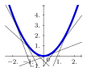
La fonction g(x)=\sqrt{x} est concave sur ]0;+\infty[.
Pour tout x réel strictement positif, g'(x)=\dfrac{1}{2\sqrt{x}} et la fonction g' est décroissante sur ]0;+\infty[.
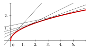
2.2 Point d’inflexion
Soit f une fonction dérivable sur un intervalle I et \mathcal{C} sa courbe représentative dans un repère. Soit a \in I. Dire que le point A\left( a; f(a) \right) est un point d’inflexion de \mathcal{C} signifie qu’en A la courbe \mathcal{C} traverse sa tangente.
Conséquence
En l’abscisse a, f passe de convexe à concave ou de concave à convexe.
La fonction f(x)=x^3 est concave sur ]- \infty; 0] et convexe sur [0; +\infty[.
La fonction admet donc comme point d’inflexion l’origine du repère.
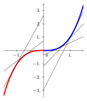
Soit f une fonction deux fois dérivable sur un intervalle I, \mathcal{C} sa représentation graphique dans un repère et a\in I.
Le point A \left( a; f(a) \right) est un point d’inflexion de \mathcal{C} si, et seulement si, f'' s’annule en a en changeant de signe.
Montrons que le point A \left( a; f(a) \right) est un point d’inflexion de \mathcal{C} si, et seulement si, f'' s’annule en a en changeant de signe.
f'' s’annule en changeant de signe en a si, et seulement si, f' change de sens de variation en a. Donc f change de convexité en a et la fonction f admet alors un point d’inflexion en a.
Montrons que la fonction cube admet un point d’inflexion :
On vérifie que la fonction est deux fois dérivable sur l’intervalle étudié : la fonction cube f est deux fois dérivable sur \mathbb{R} car c’est une fonction polynôme.
On calcule f'' : f'(x)=3x^2 et f''(x)=6x.
Étude du signe de f'' : f''(x) \geqslant 0 \quad \Longleftrightarrow \quad 6x \geqslant 0 \quad \Longleftrightarrow \quad x \geqslant 0
On conclut : la dérivée seconde s’annule en changeant de signe en 0. On retrouve le fait que l’origine O du repère représente un point d’inflexion de la courbe de f.
Soit f la fonction définie sur \mathbb{R} par f(x)=0{,}5x^4+x^3-6x^2-1.
Étudier la convexité de f sur \mathbb{R} et donner les éventuels points d’inflexion de sa courbe représentative C_f.
f est une fonction polynôme donc elle est dérivable sur \mathbb{R}.
Pour x réel, f'(x)=2x^3+3x^2-12x
f' est une fonction polynôme donc elle est dérivable sur \mathbb{R}.
Pour x réel, f''(x)=6x^2+6x-12
\Delta=6^2-4\times 6 \times (-12)=324=18^2>0
donc f'' admet deux racines réelles distinctes :
x_1=\frac{-6-18}{2 \times 6}=-2 et x_2=\frac{-6+18}{2 \times 6}=1
f'' change de signe et s’annule en -2 et 1 donc la courbe représentative C_f admet deux points d’inflexion aux points d’abscisses -2 et 1.
3 Notion de continuité
On dit qu’une fonction f est continue sur un intervalle I lorsque sa courbe représentative ne présente aucune rupture (on peut tracer la courbe sans lever le crayon de la feuille).
La fonction carré est continue sur \mathbb{R}.
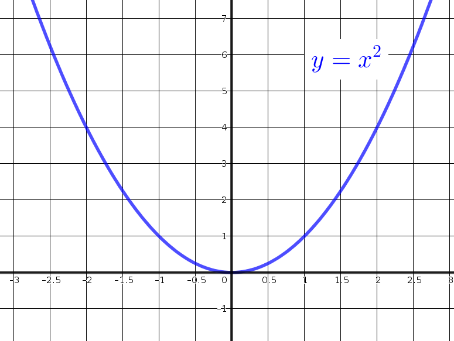
La fonction inverse est continue sur ]-\infty;0[ et sur ]0;+\infty[, mais pas sur \mathbb{R}.
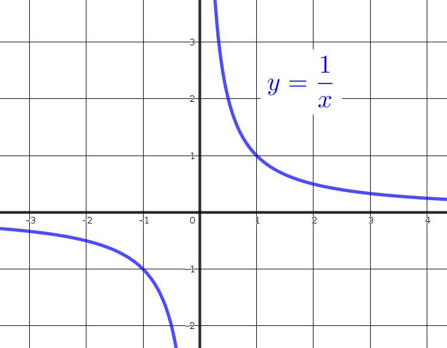
La fonction f ci-dessous est définie sur [0;5], mais n’est pas continue.
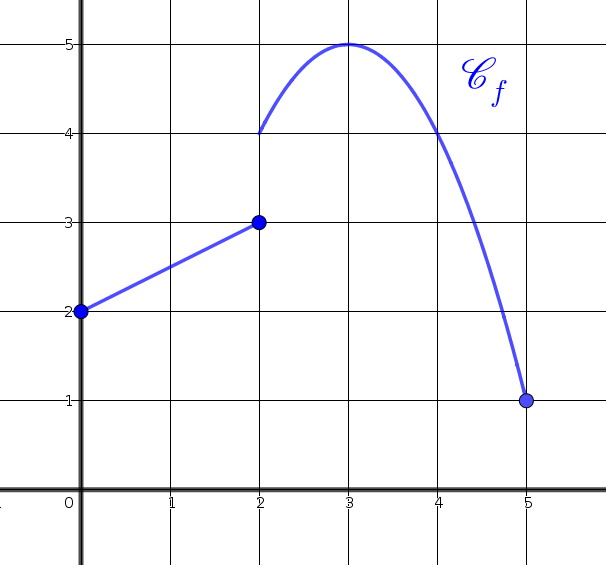
Soit f une fonction définie sur un intervalle I de \mathbb{R}. Soit a\in I.
On dit que f est continue en a si f admet une limite en a, égale à f(a).
On dit que f est continue sur I si f est continue en a pour tout a\in I.
Il faudra parfois étudier la limite de f à gauche et à droite de a.
Soit la fonction f définie sur \mathbb{R} par f(x)=\begin{cases}e^{x-2} ~\text{si} ~x \in ]-\infty;2[\\3-x ~\text{si}~ x \in [2;+\infty[\end{cases} .
Étudier la continuité de f en 2.
\lim\limits_{x \to 2^-} e^{x-2}=1 et \lim\limits_{x \to 2^+} (3-x)=1
donc, \lim\limits_{x \to 2^-} e^{x-2}=\lim\limits_{x \to 2^+} (3-x)=1=f(2)
Donc, f est continue en 2.
Une fonction obtenue par opérations sur les fonctions usuelles est continue sur chaque intervalle où elle est définie.
Les fonctions affines, polynomiales, rationnelles sont continues sur tout intervalle de leur ensemble de définition.
Toute fonction dérivable sur un intervalle est continue sur cet intervalle.
La réciproque de cette proposition est fausse: par exemple, la fonction racine carrée est définie et continue sur \mathbb{R}^+, mais dérivable seulement sur \mathbb{R}^{+*}.
4 Théorème des valeurs intermédiaires
4.1 Exemples
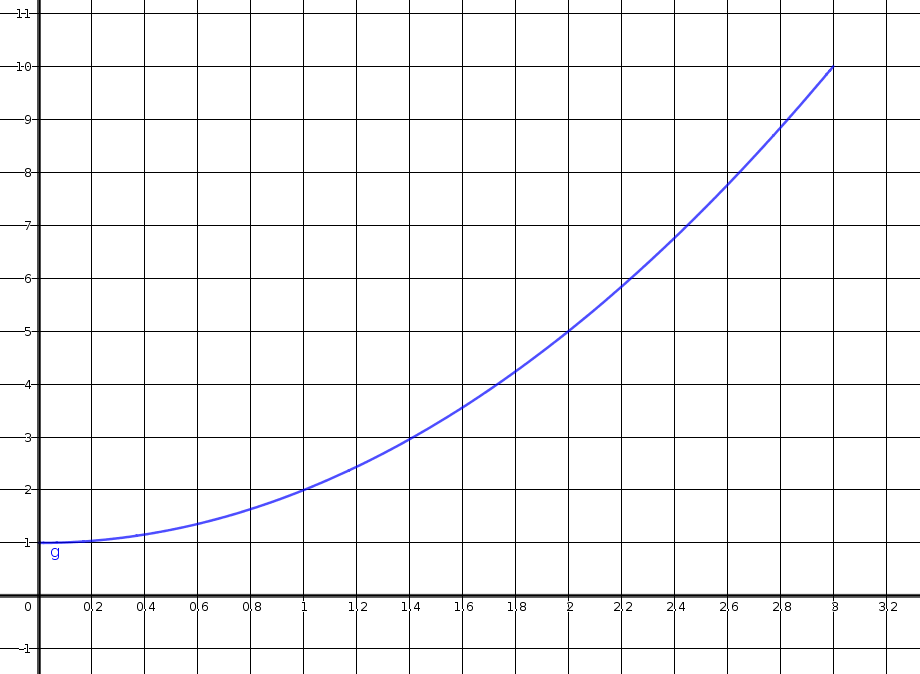
Exemple 1
Soit f une fonction continue et strictement croissante sur [0;3]. f prend une et une seule fois toute valeur comprise entre f(0) et f(3), c’est-à-dire entre 1 et 10. Par exemple, f prend une seule fois la valeur 4.
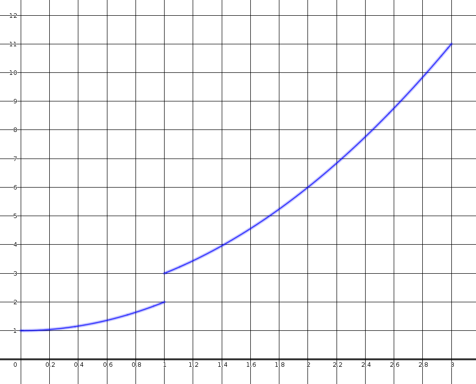
Exemple 2
La fonction g n’est pas continue sur [0;3]. Ainsi g ne prend pas toutes les valeurs entre g(0) et g(3). Par exemple, g ne prend jamais la valeur 2{,}5.
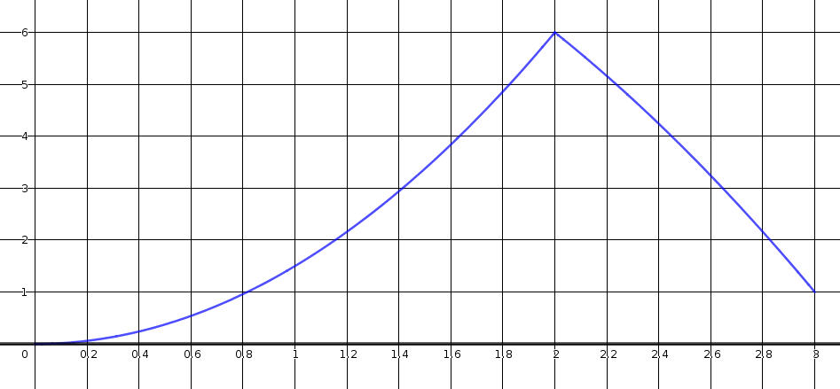
Exemple 3
Soit h une fonction continue mais pas strictement monotone sur [0;3]. h peut prendre plusieurs fois la même valeur entre h(0) et h(3). Par exemple la valeur 4 est prise deux fois.
4.2 Résultats
Théorème des valeurs intermédiaires
Soit f une fonction continue sur un intervalle [a;b]. Toutes les valeurs intermédiaires entre f(a) et f(b) sont prises au moins une fois.
Autrement dit, pour tout réel k compris entre f(a) et f(b) il existe au moins un réel c \in [a;b] tel que f(c)=k.
Si f(a) et f(b) sont de signes contraires, alors 0 est une valeur intermédiaire. Donc l’équation f(x)=0 admet au moins une solution dans l’intervalle [a;b].
Théorème de la bijection, ou corollaire du théorème des valeurs intermédiaires
Soit f une fonction continue et strictement monotone sur un intervalle [a;b]. Soit k un réel compris entre f(a) et f(b).
L’équation f(x)=k admet une unique solution dans l’intervalle [a;b].
Soit f la fonction dont le tableau de variations est le suivant:
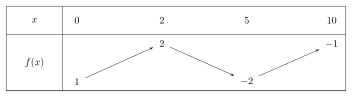
Démontrer que l’équation f(x)=0 admet une unique solution sur [2;5].
Démontrer que l’équation f(x)=0 n’admet pas de solution sur [0;2].
Démontrer que l’équation f(x)=0 n’admet pas de solution sur [5;10].
En déduire le nombre exact de solutions de l’équation f(x)=0 sur [0;10].
On considère la fonction f définie sur \mathbb{R} par f(x)=e^x-x.
Dresser le tableau de variations de la fonction f sur \mathbb{R}.
Démontrer que l’équation f(x)=2 admet exactement deux solutions dans \mathbb{R}.
Donner une valeur approchée au dixième de ces solutions.
La fonction f est dérivable sur \mathbb{R} comme somme de fonctions dérivables sur \mathbb{R}.
Soit x \in \mathbb{R}, f'(x)=e^x-1
e^x-1 \geqslant 0 \Leftrightarrow e^x \geqslant e^0 \Leftrightarrow x \geqslant 0\lim\limits_{x \to -\infty} e^{x}=0 et \lim\limits_{x \to -\infty} (-x)=+\infty donc, par somme, \lim\limits_{x \to -\infty} f(x)=+\infty
Soit x \in \mathbb{R}^*, f(x)=e^x(1-\frac{1}{\frac{e^x}{x}})
D’après le théorème des croissances comparées : \lim\limits_{x \to +\infty} \frac{e^x}{x}=+\infty donc, par quotient, \lim\limits_{x \to +\infty} \frac{1}{\frac{e^x}{x}}=0
donc, par somme \lim\limits_{x \to +\infty} (1-\frac{1}{\frac{e^x}{x}})=1 et \lim\limits_{x \to +\infty} {e^x}=+\infty, donc, par produit, \lim\limits_{x \to +\infty} f(x)=+\infty
On obtient le tableau de variations :
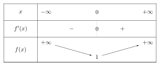
La fonction f est définie, continue (car dérivable) et strictement décroissante sur ]-\infty;0].
2 est compris entre f(0)=1 et \lim\limits_{x \to -\infty} f(x)=+\infty.
D’après le corollaire du théorème des valeurs intermédiaires, l’équation f(x)=2 admet une unique solution \alpha_1 sur ]-\infty;0].
La fonction f est définie, continue (car dérivable) et strictement croissante sur [0;+\infty[.
2 est compris entre f(0)=1 et \lim\limits_{x \to +\infty} f(x)=+\infty.
D’après le corollaire du théorème des valeurs intermédiaires, l’équation f(x)=2 admet une unique solution \alpha_2 sur [0;+\infty[.
Donc, l’équation f(x)=2 admet deux solutions dans \mathbb{R}.Avec la calculatrice, on trouve \alpha_1 \approx -1{,}8 et \alpha_2 \approx 1{,}1 (au centième : \alpha_1 \approx -1{,}84 et \alpha_2 \approx 1{,}15).
4.3 Application aux suites
4.3.1 Image d’une suite convergente par une fonction continue
Soit f une fonction définie et continue sur un intervalle I de \mathbb{R}.
Soit (u_n) une suite telle que, pour tout entier naturel n, u_n \in I.
Si (u_n) est convergente vers un nombre réel \ell appartenant à I, alors la suite (f(u_n)) converge vers f(\ell).
Soit f la fonction définie sur [-3;+\infty[ par f(x)=\sqrt{3+x}.
Soit (u_n) la suite définie sur \mathbb{N} par u_n=\frac{1}{n+4}.
Par somme, \lim\limits_{n \to +\infty} (n+4)=+\infty
Par quotient, \lim\limits_{n \to +\infty} u_n=0
f est continue sur [-3;+\infty[ donc \lim\limits_{n \to +\infty} f(u_n)=f(0)=\sqrt{3}
4.3.2 Limite d’une suite u_{n+1}=f(u_n)
Théorème du point fixe
Soit f une fonction définie et continue sur un intervalle I de \mathbb{R} et à valeurs dans I.
Soit (u_n) une suite définie par la relation de récurrence u_{n+1}=f(u_n), avec son premier terme u_0 \in I.
Si (u_n) converge vers un nombre réel \ell appartenant à I alors \ell est une solution de l’équation f(x)=x.
Avec les mêmes hypothèses.
D’une part, (u_n) converge vers un réel \ell donc \lim\limits_{n \to +\infty} u_n=\lim\limits_{n \to +\infty} u_{n+1}=\ell.
D’autre part, d’après la propriété précédente, \lim\limits_{n \to +\infty} u_{n+1}=\lim\limits_{n \to +\infty} f(u_n)=f(\lim\limits_{n \to +\infty} u_{n})=f(\ell)
Ainsi, f(\ell)=\ell.
Autrement dit, f(\ell)=\ell. Attention, ce n’est pas forcément la seule solution de l’équation f(x)=x.
On considère la suite (u_n) définie sur \mathbb{N} par u_0=\frac{5}{2} et u_{n+1}=f(u_n) où f est la fonction définie sur \mathbb{R} par f(x)=-x^2+6x-6.
Démontrer que la fonction f est strictement croissante sur [2;3].
Démontrer que, pour tout n \in \mathbb{N}, 2<u_n<u_{n+1}<3.
En déduire que la suite (u_n) est convergente et déterminer sa limite.
f est une fonction polynôme donc dérivable sur \mathbb{R} donc sur [2;3],
et pour tout x \in [2;3], f'(x)=-2x+6.
-2x+6 \geqslant 0 \Leftrightarrow 6 \geqslant 2x \Leftrightarrow 3 \geqslant x
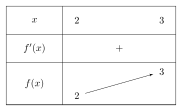
Soit n \in \mathbb{N}, P_n : « 2<u_n<u_{n+1}<3 »
Initialisation :
u_0=\frac{5}{2} et u_1=f(u_0)=-(\frac{5}{2})^2+6 \times \frac{5}{2}-6=\frac{11}{4}
Ainsi, 2<u_0<u_1<3
Donc P_0 vraie.
Hérédité :
Supposons P_n vraie pour un entier naturel n quelconque.
2<u_n<u_{n+1}<3
\Leftrightarrow f(2)<f(u_n)<f(u_{n+1})<f(3) car f est strictement croissante sur [2;3]
\Leftrightarrow 2<f(u_n)<f(u_{n+1})<3
Donc P_{n+1} vraie.
Conclusion :
P_0 est vraie.
\forall n \in \mathbb{N}, P_n vraie \Rightarrow P_{n+1} vraie.
Donc, \forall n \in \mathbb{N}, 2<u_n<u_{n+1}<3La suite (u_n) est donc croissante et majorée (par 3) donc, d’après le théorème de convergence des suites monotones, elle converge vers un réel \ell.
f est une fonction définie et continue sur [2;3] et à valeurs dans [2;3].
(u_n) est définie par la relation de récurrence u_{n+1}=f(u_n), avec son premier terme u_0 \in [2;3].
D’après le théorème du point fixe, \ell est une solution de l’équation f(x)=x.
f(x)=x \Leftrightarrow -x^2+6x-6=x \Leftrightarrow -x^2+5x-6=0
\Delta=5^2-4 \times (-1) \times (-6)=1=1^2>0
donc cette équation admet deux solutions réelles distinctes :
x_1=\frac{-5-1}{-2}=3 et x_2=\frac{-5+1}{-2}=2
Comme u_0=\frac{5}{2} et que (u_n) est croissante alors \ell=3.